Phase 9 final review
Mock-mode captures (npm run dev:mock, synthetic fixtures; not the real backend). Each composite shows the design reference beside the actual page at 1536×1024. Captured 2026-10-18T14:33:29.627Z.
Automated checks (all four viewports per subject)
| Subject | Horizontal overflow | Primary action bottom at 1536 (≤1024) | Unresolved small text / targets | Directory captions <12px (left) | Approved-scene items (left) | Keyboard pass |
|---|---|---|---|---|---|---|
| reception-patient | none | 836 | 0 | 24 | 146 | pass |
| consultation-patient | none | 340 | 0 | 24 | 365 | pass |
| appointments-book | none | 501 | 0 | 24 | 0 | pass |
| appointments-manage | none | 360 | 0 | 24 | 0 | pass |
| appointments-reschedule | none | 337 | 0 | 24 | 0 | pass |
| appointments-walkin | none | 404 | 0 | 6 | 0 | pass |
| waiting-patient | none | 721 | 0 | 24 | 76 | pass |
| pharmacy-patient | none | 823 | 0 | 24 | 0 | pass |
| pharmacy-pharmacist | none | 854 | 0 | 6 | 0 | pass |
| billing-patient | none | 717 | 0 | 24 | 0 | pass |
| billing-staff | none | 697 | 0 | 6 | 0 | pass |
| emergency-patient | none | 702 | 0 | 24 | 0 | pass |
| emergency-staff | none | 581 | 0 | 6 | 0 | pass |
| records-patient | none | 393 | 0 | 24 | 0 | pass |
| records-doctor | none | 304 | 0 | 15 | 0 | pass |
| control-admin | none | 541 | 0 | 6 | 0 | pass |
| control-ops | none | 541 | 0 | 6 | 0 | pass |
| traces-admin | none | 332 | 0 | 6 | 0 | pass |
| traces-ops | none | 332 | 0 | 6 | 0 | pass |
Reference | actual

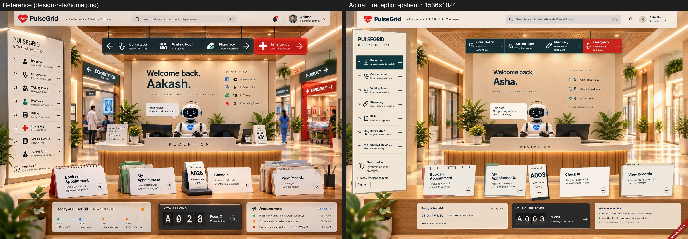
/patient/dashboard · sizes: 1536×1024 1440×900 1280×800 390×844


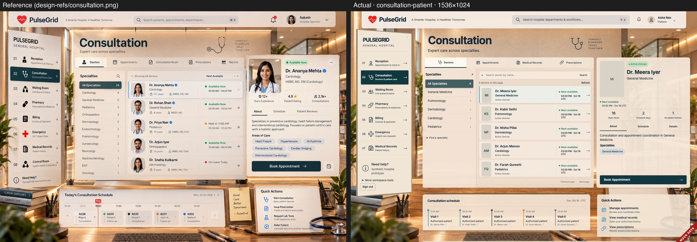
/patient/doctors · sizes: 1536×1024 1440×900 1280×800 390×844


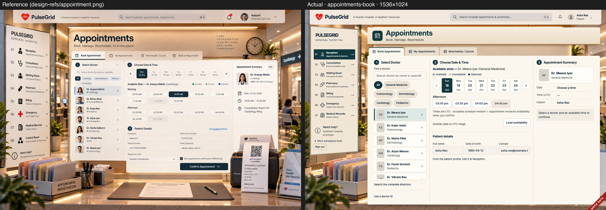
/patient/appointments · sizes: 1536×1024 1440×900 1280×800 390×844


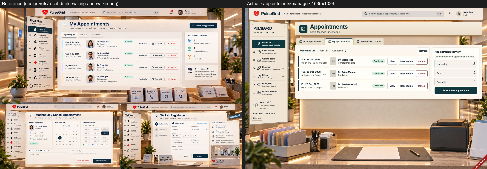
/patient/appointments?view=upcoming · sizes: 1536×1024 1440×900 1280×800 390×844


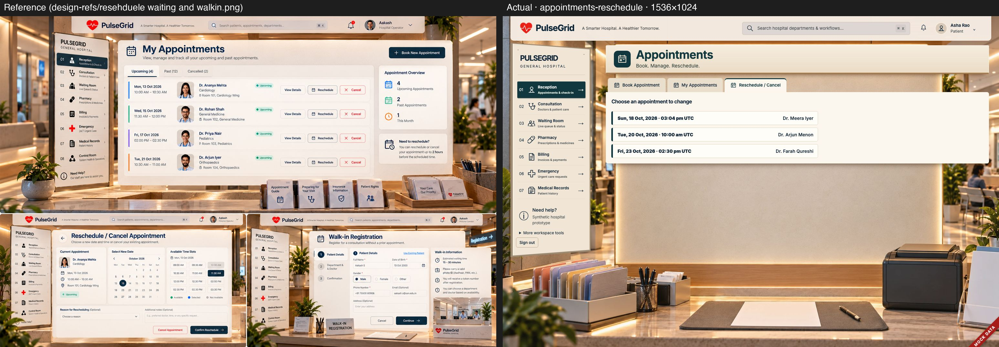
/patient/appointments?view=reschedule · sizes: 1536×1024 1440×900 1280×800 390×844


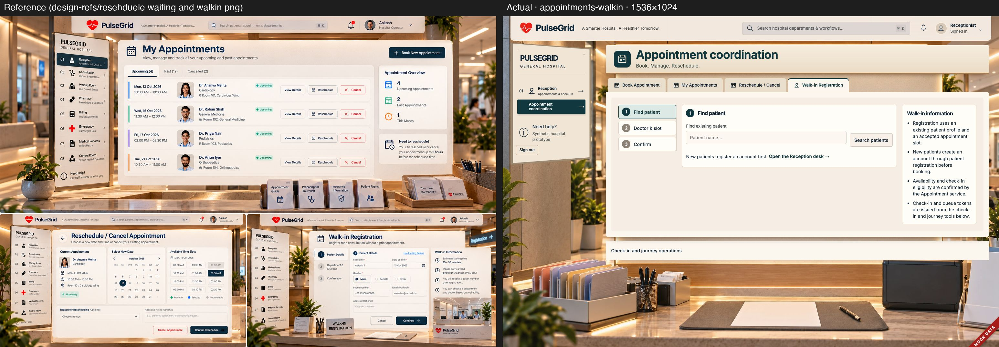
/receptionist/appointments?view=walk-in · sizes: 1536×1024 1440×900 1280×800 390×844


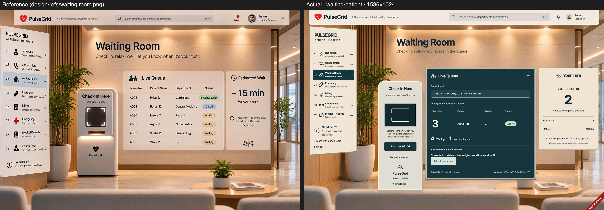
/patient/queue · sizes: 1536×1024 1440×900 1280×800 390×844


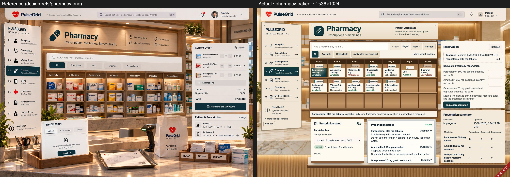
/patient/pharmacy · sizes: 1536×1024 1440×900 1280×800 390×844


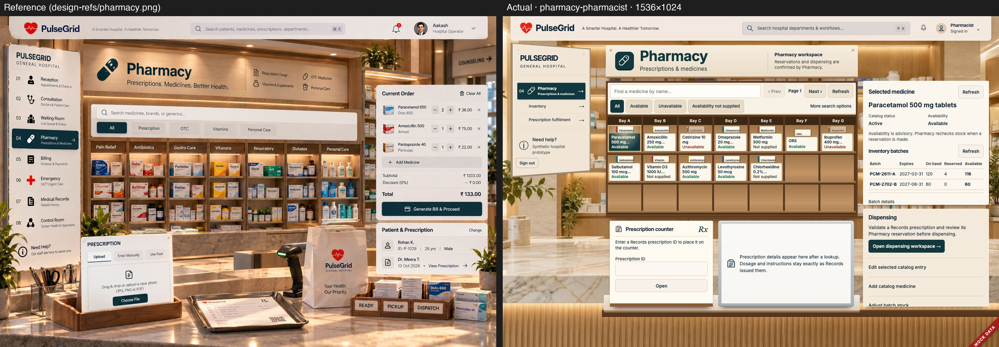
/pharmacist/dashboard · sizes: 1536×1024 1440×900 1280×800 390×844


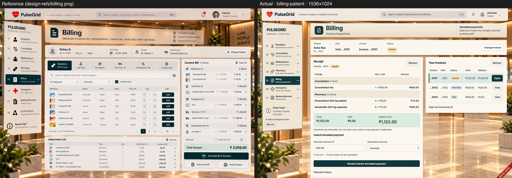
/patient/billing · sizes: 1536×1024 1440×900 1280×800 390×844


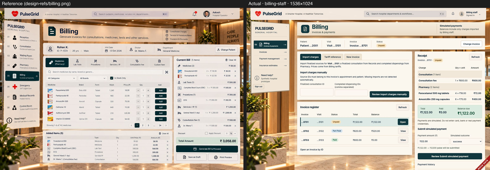
/billing/dashboard · sizes: 1536×1024 1440×900 1280×800 390×844


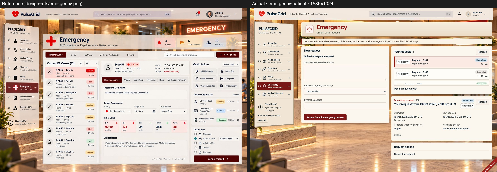
/patient/emergency · sizes: 1536×1024 1440×900 1280×800 390×844


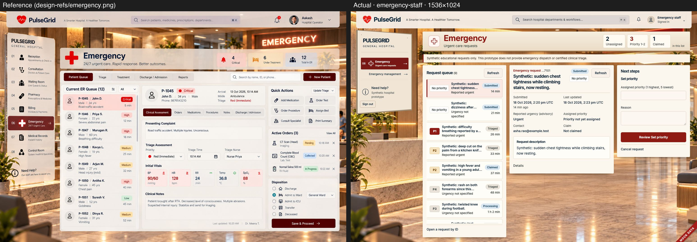
/emergency/dashboard · sizes: 1536×1024 1440×900 1280×800 390×844


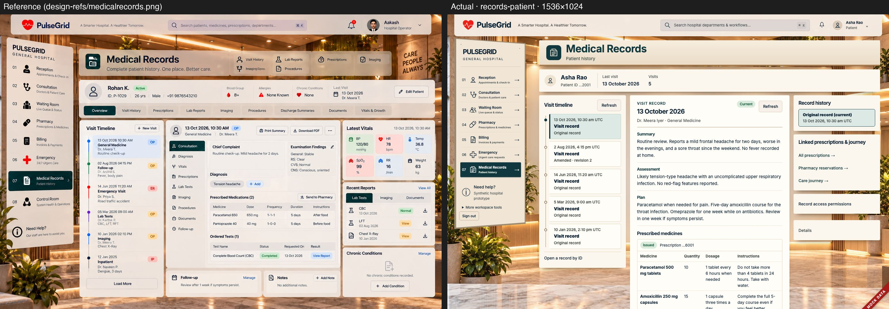
/patient/records · sizes: 1536×1024 1440×900 1280×800 390×844


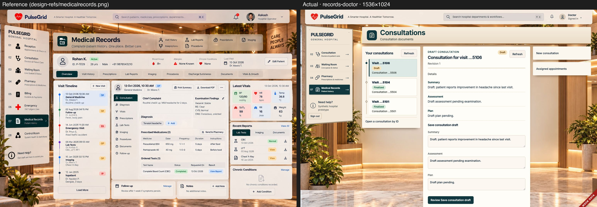
/doctor/consultations · sizes: 1536×1024 1440×900 1280×800 390×844


/admin/control-room · sizes: 1536×1024 1440×900 1280×800 390×844


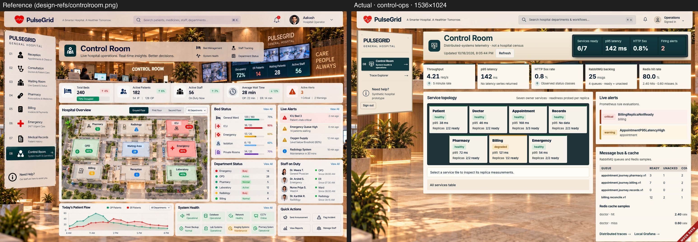
/ops/dashboard · sizes: 1536×1024 1440×900 1280×800 390×844


/admin/traces · sizes: 1536×1024 1440×900 1280×800 390×844


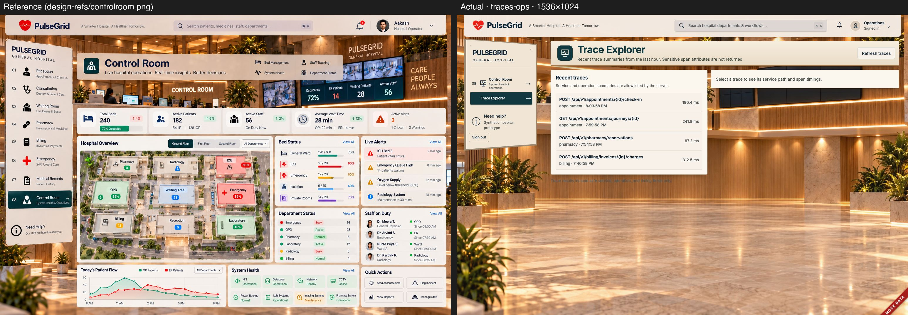
/ops/traces · sizes: 1536×1024 1440×900 1280×800 390×844


Before | after (pass 3 departments)

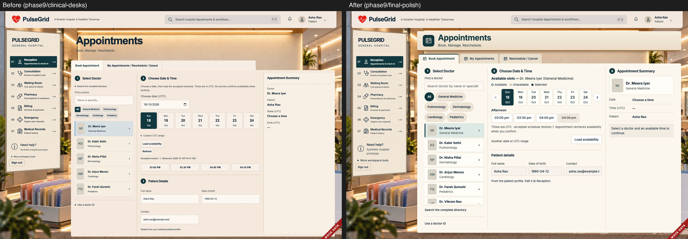

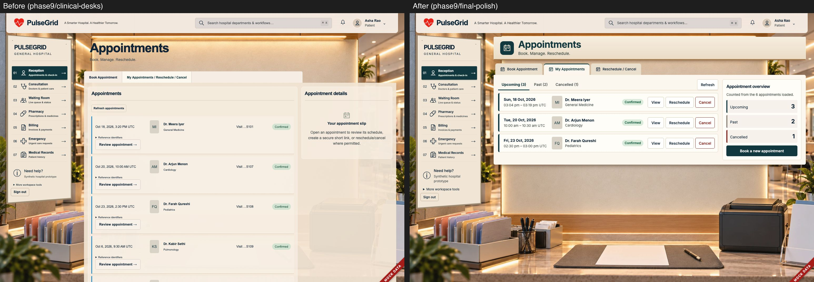

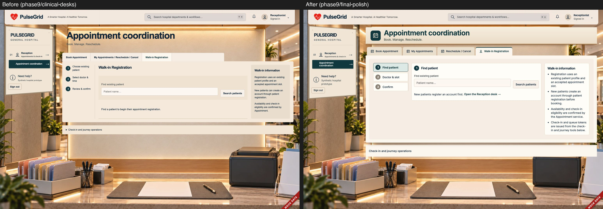

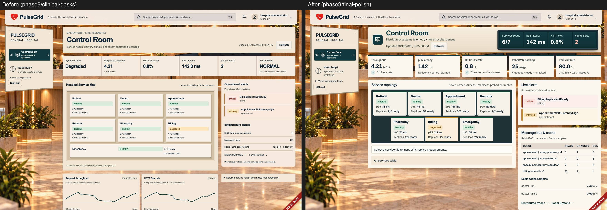

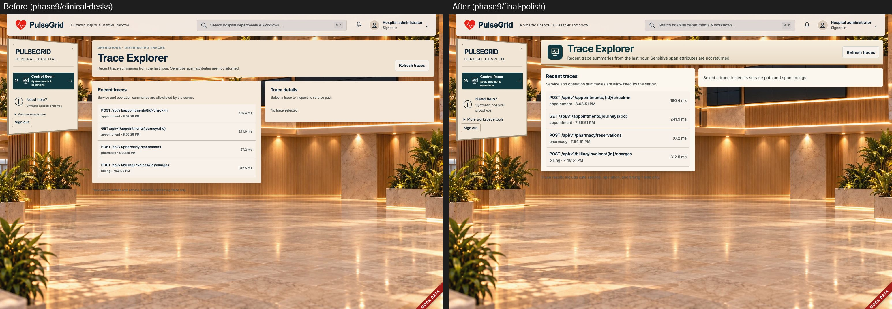